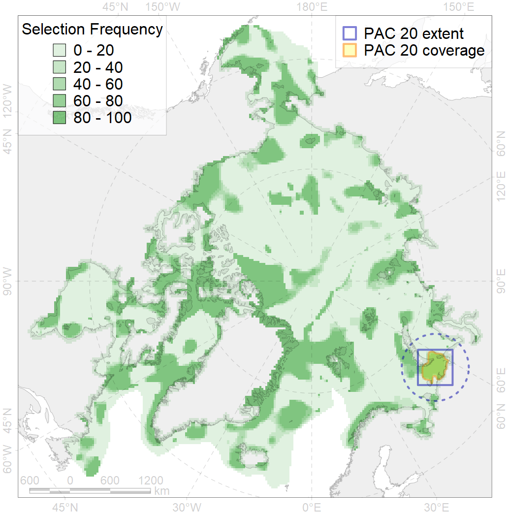
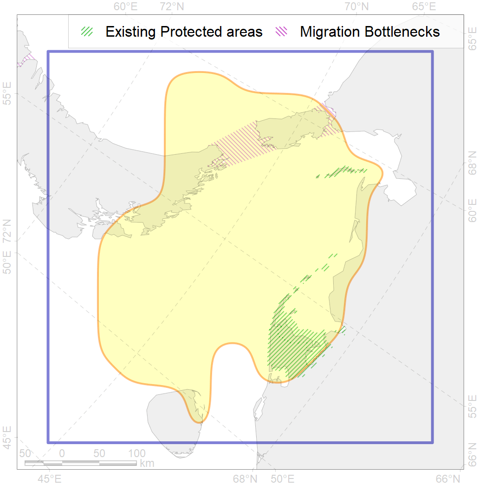

20
For more information regarding this PAC and to conduct custom spatial analysis using the PAC data or any spatial query, please consult Accenter.

0
CFs entirely within the PAC area
20
CFs at least 25% within the PAC area
24
CFs with at least 50% of their target achieved in the PAC
37
CFs with at least half of their target achieved in the PAC
| CF ID | CF Name | Proportion in the PAC | Conservation Target | Contribution to ArcNet Target Achievement | PAC’s Contribution to the Achieved Target |
|---|---|---|---|---|---|
| 6069 | King eider (Somateria spectabilis) Atlantic moulting&migration stopovers | 87.1% | 54.0% | 156.1% | 96.0% |
| 7010 | SE Pechora Sea area of increased benthic biomass | 84.3% | 72.0% | 110.4% | 92.3% |
| 1009 | Atlantic Walrus Summer Distribution in Pechora and Kara region | 83.6% | 33.6% | 234.4% | 98.7% |
| 3012 | Fast ice distribution in the Pechora Sea | 70.5% | 6.0% | 1096.5% | 93.7% |
| 7076 | I.1.3.4. Estuaries and lagoons | 66.5% | 34.2% | 190.3% | 87.3% |
| 1007 | Atlantic Walrus haulouts in Pechora and Kara region | 60.9% | 96.0% | 63.4% | 61.7% |
| 3120 | Polynyas distribution in the Pechora Sea region | 52.9% | 12.0% | 413.4% | 95.4% |
| 7245 | Pechora Sea kelp patches (13-14) | 50.0% | 30.0% | 85.0% | 46.8% |
| 4039 | Spawning areas of the Polar Cod (Boreogadus saida) in the Barents Sea | 48.5% | 48.0% | 98.0% | 65.7% |
| 7049 | Pechora Sea - Baidara Bay transitional zone | 46.0% | 24.8% | 178.9% | 88.3% |
| 6020 | Long-tailed duck (Clangula hyemalis) North East Atlantic moulting&migration stopovers | 44.2% | 76.8% | 55.6% | 55.5% |
| 6061 | Common eider (Somateria mollissima mollissima) SE Barents and Kara Sea breeding&moulting grounds | 43.0% | 55.2% | 73.9% | 67.5% |
| 7241 | Kelp forests of South Island of Novaya Zemlya and Matochkin Shar Strait | 42.6% | 30.0% | 131.7% | 74.1% |
| 2041 | Ringed seal whelping areas in the Barents Sea | 42.0% | 24.0% | 168.5% | 71.7% |
| 6043 | Stellers eider (Polysticta stelleri) Atlantic moulting&migration stopovers | 35.3% | 52.8% | 64.9% | 45.9% |
| 1010 | Atlantic Walrus Winter Distribution in Pechora and Kara region | 35.2% | 33.6% | 102.0% | 67.3% |
| 2003 | Bearded seal whelping areas in the Barents Sea | 34.1% | 24.0% | 137.8% | 59.9% |
| 4089 | Fish zoogeography, Arctic Region, Subarctic Transitional-Atlantic Province, Mesen’ – Pechora aquatory of the Barents District | 32.9% | 19.7% | 160.8% | 71.8% |
| 7064 | I.1.1.1. Coastal domain in the Barents Sea | 32.0% | 7.8% | 390.1% | 55.3% |
| 4072 | Range of the Pechora herring (Clupea pallaii suworowi) | 27.2% | 12.0% | 218.2% | 62.0% |
| 4040 | Larvae distribution of the Polar Cod (Boreogadus saida) in the Barents Sea | 21.1% | 48.0% | 43.4% | 25.0% |
| 3117 | Polynyas distribution in the Eastern Novaya Zemlya region | 21.1% | 12.0% | 168.3% | 70.4% |
| 4020 | Feeding area of the White-sea vendace (Coregonus sardinella marisalbi) | 20.9% | 24.0% | 81.1% | 35.3% |
| 8032 | Salt marshes of the Barents Sea LME | 19.8% | 50.0% | 36.9% | 36.7% |
| 3014 | Fast ice distribution in the Novaya Zemlya region | 19.1% | 6.0% | 284.3% | 64.2% |
| 4043 | Range of Nawaga (Eleginus nawaga) | 19.0% | 12.0% | 152.6% | 43.6% |
| 3119 | Polynyas distribution in the Western Novaya Zemlya region | 18.4% | 12.0% | 153.2% | 29.7% |
| 3027 | Marginal Ice Zone distribution in April in the Kara Sea LME | 14.3% | 12.0% | 111.9% | 28.6% |
| 6028 | Glaucous gull (Larus hyperboreus hyperboreus) breeding grounds | 11.2% | 12.0% | 86.5% | 13.6% |
| 4008 | Feeding / nursery area of the Arctic Cisco (Coregonus autumnalis), Eurasian populations | 10.3% | 38.4% | 25.6% | 24.0% |
| 4094 | Subarctic fish complex of the Barents region | 9.9% | 6.0% | 159.2% | 29.5% |
| 3026 | Marginal Ice Zone distribution in April in the Barents Sea LME | 9.5% | 12.0% | 76.7% | 18.2% |
| 9028 | polar bear denning areas of KS (Kara Sea) subpopulation | 8.8% | 52.8% | 15.5% | 15.4% |
| 3116 | Polynyas distribution in the Yamal region | 8.4% | 12.0% | 63.2% | 21.7% |
| 5007 | Beluga of the Barents-Kara-Laptev Sea stock general distribution | 7.6% | 24.0% | 30.2% | 20.2% |
| 8025 | intertidal zone of the Barents Sea LME | 7.6% | 28.0% | 16.2% | 7.0% |
| 7066 | I.1.1.3. Shelf plains | 7.2% | 3.7% | 185.9% | 15.3% |
| 4052 | Range of the Fourhorn Sculpin (Myoxocephalus quadricornis), American populations | 6.9% | 3.0% | 219.6% | 15.2% |
| 4054 | Range of the Shorthorn Sculpin (Myoxocephalus scorpius), European populations | 6.8% | 3.0% | 217.7% | 15.9% |
| 4014 | Feeding area of the Siberian whitefish (Coregonus pidschian) | 6.7% | 24.0% | 26.4% | 16.7% |
| 8016 | Barents Sea estuaries | 6.4% | 50.0% | 12.9% | 10.6% |
| 4006 | Feeding/nursery area of the Pacific rainbow smelt (Osmerus dentex) | 6.2% | 18.0% | 33.0% | 12.5% |
| 4018 | Feeding area of the Vendace, Least cisco (Coregonus sardinellа), Euro-Asian populations | 6.0% | 24.0% | 23.9% | 12.5% |
| 4015 | Feeding area of the Broad whitefish (Coregonus nasus), American populations | 5.7% | 32.4% | 16.5% | 14.1% |
| 7046 | Western Kara transitional zone | 5.5% | 15.2% | 31.7% | 31.4% |
| 4030 | Feeding area of the Arctic charr (Salvelinus alpinus), anadromous populations | 5.2% | 38.4% | 12.7% | 11.1% |
| 4027 | Feeding/migration area of the Atlantic salmon (Salmo salar) American populations | 5.1% | 20.4% | 24.2% | 16.6% |
| 9010 | polar bear of the KS (Kara Sea) subpopulation distribution | 4.8% | 26.4% | 17.0% | 16.6% |
| 4021 | Feeding area of the Inconnu (Stenodus leucichthys nelma), Euro-Asian populations | 4.6% | 32.4% | 13.5% | 11.4% |
| 4058 | Range of the Arctic flounder (Liopsetta glacialis) | 4.5% | 6.0% | 71.7% | 9.2% |
| 4057 | Range of the American Plaice (Hippoglossoides platessoides), American populations | 4.5% | 3.0% | 144.4% | 13.1% |
| 4049 | Range of the Haddock (Melanogrammus aeglefinus) | 4.2% | 6.0% | 67.1% | 10.7% |
| 2020 | Harp seal foraging areas in the Barents Sea | 3.5% | 24.0% | 14.2% | 14.2% |
| 7041 | South-eastern Barents - White Sea transitional zone | 2.8% | 12.6% | 21.9% | 7.1% |
| 2011 | Bearded seal whelping areas in the Kara Sea | 2.4% | 24.0% | 8.9% | 8.7% |
| 4038 | Feeding area of the Polar cod in the Barents Sea | 2.2% | 24.0% | 8.2% | 5.9% |
| 4045 | Feeding/migration area of the Pink Salmon (Oncorhynchus gorbuscha), native distribution | 2.0% | 6.0% | 32.6% | 5.3% |
| 4003 | Range of the Atlantic Capelin (Mallotus villosus) | 2.0% | 3.0% | 62.2% | 5.3% |